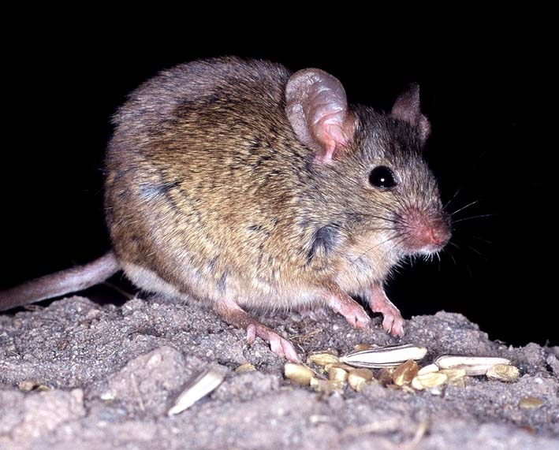
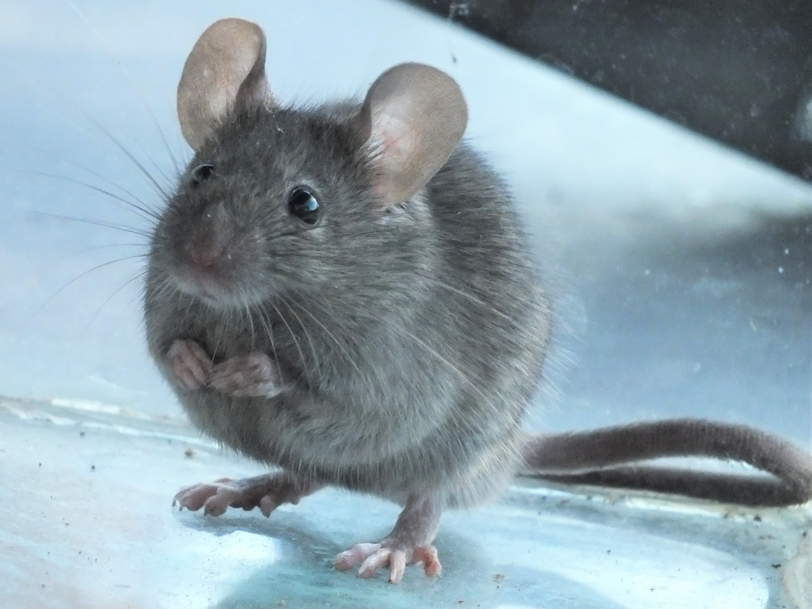

Acerca de...
La laucha, también conocida como ratón doméstico o su nombre cientifico (Mus musculus), es un roedor pequeño y ágil que se encuentra comúnmente en todo el mundo. Su cuerpo suele tener una longitud de entre 7 y 10 centímetros, con una cola que puede medir de 8 a 10 centímetros adicionales. Tienen orejas grandes y redondeadas, ojos pequeños y oscuros, y una nariz.
Su pelaje es suave y puede variar en color, siendo comúnmente gris, marrón o una combinación de ambos, dependiendo del entorno en el que habitan.

Son conocidos por su capacidad de adaptación a una variedad de entornos, desde campos y bosques hasta áreas urbanas. Tienen una notable destreza para trepar, saltar y moverse rápidamente, lo que les permite encontrar refugio y alimentos en una amplia gama de lugares. Aunque pueden considerarse plagas en entornos urbanos debido a su tendencia a buscar alimento en áreas habitadas por humanos, también desempeñan un papel importante en los ecosistemas naturales como presas para depredadores y como dispersores de semillas.
¿Deseas más información?
 Muchos de los datos que vas a leer aquí, fueron recopilados de diferentes medios, aquí hay algunos importantes
- Wikipedia: https://es.wikipedia.org/wiki/Mus_musculus
- NeoPlagas: https://www.neoplagas.cl/mus-musculus/
- Fundación Charles Darwin: https://datazone.darwinfoundation.org/es/checklist/?species=5228